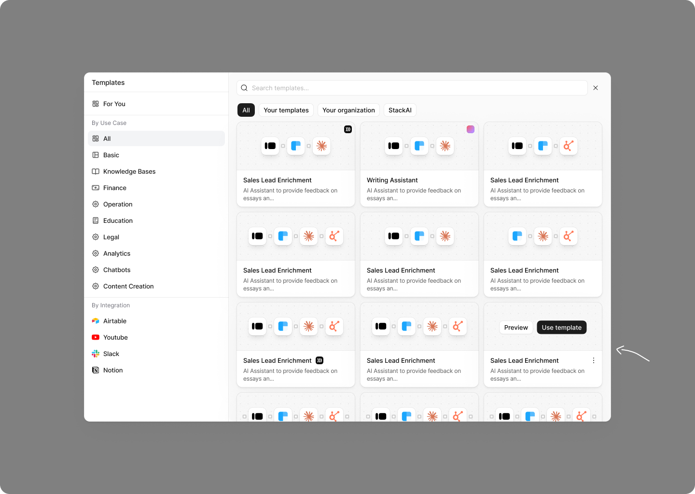
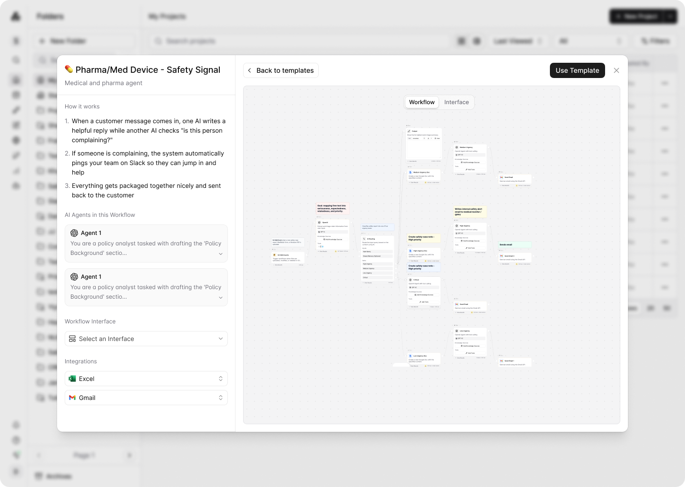
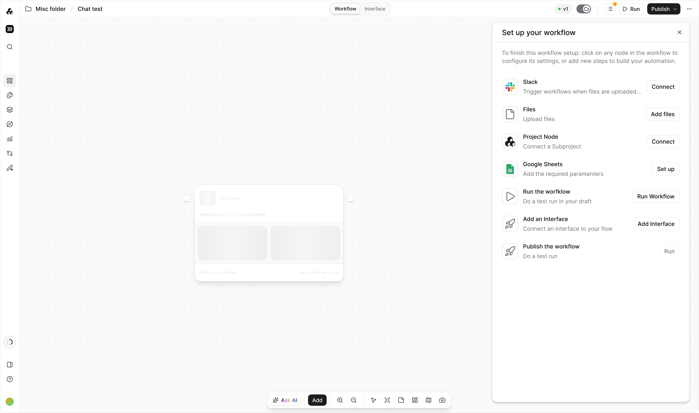

SOLUTION
New project creation
modal
Prompt-first entry with three clear paths — New Workflow, Use Template, New Agent — plus quickstart suggestions to reduce blank-canvas friction. The same pattern carries over to empty folder states.

Prompt to
Flow
Describe a workflow in plain language — nodes stream onto the canvas in real time as it generates, including triggers, HITL, subflows, and integrations. Validated in an A/B test against the old creation popup.
Project template
experience
Template preview redesigned: proper back/use-template navigation, expand prompt box, and correct node rendering in standard mode. Category sidebar clarified as a multi-select filter, not navigation. Save as Template accessible from within any workflow, with separate entry points for browsing vs. starting blank.


Project setup
checklist
Auto-opens when a builder loads a template, surfaces what's missing — connections, knowledge bases, empty inputs, node configs, LLM variables — and guides run, interface, and publish before first run. Dismisses when complete, skips interface for trigger workflows, and collapses for experienced users.
